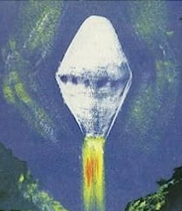

Cash-Landrum incident
Huffman, Texas, 1980

Three people reported a fiery diamond-shaped object escorted by helicopters, then suffered radiation-like injuries. Their lawsuit against the government was dismissed. 1
Open in the interactive Watcher
Related
Sources
- Cash–Landrum incident Wikipedia